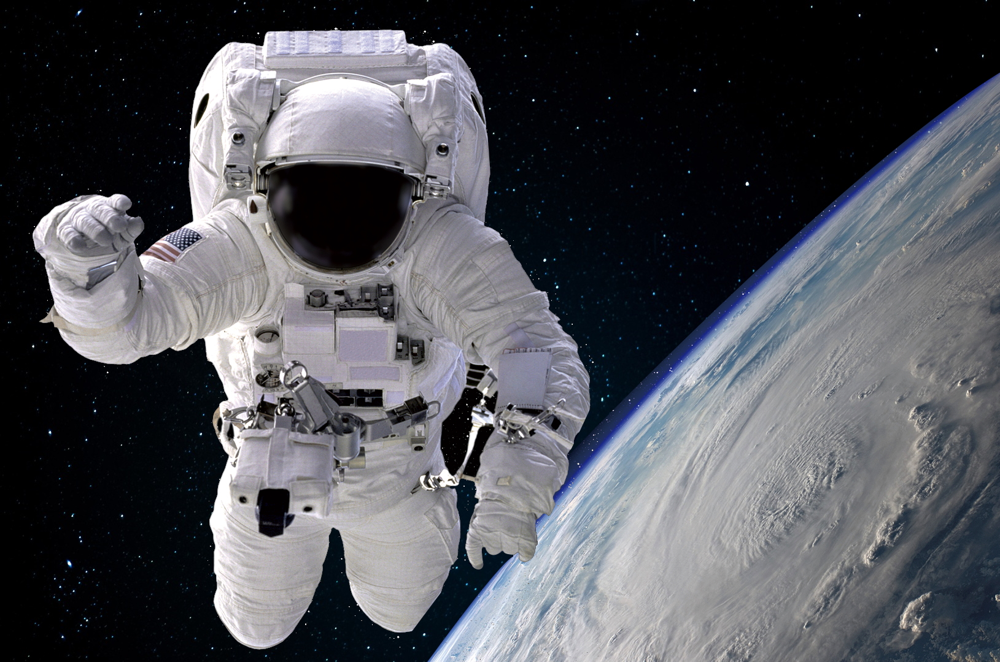
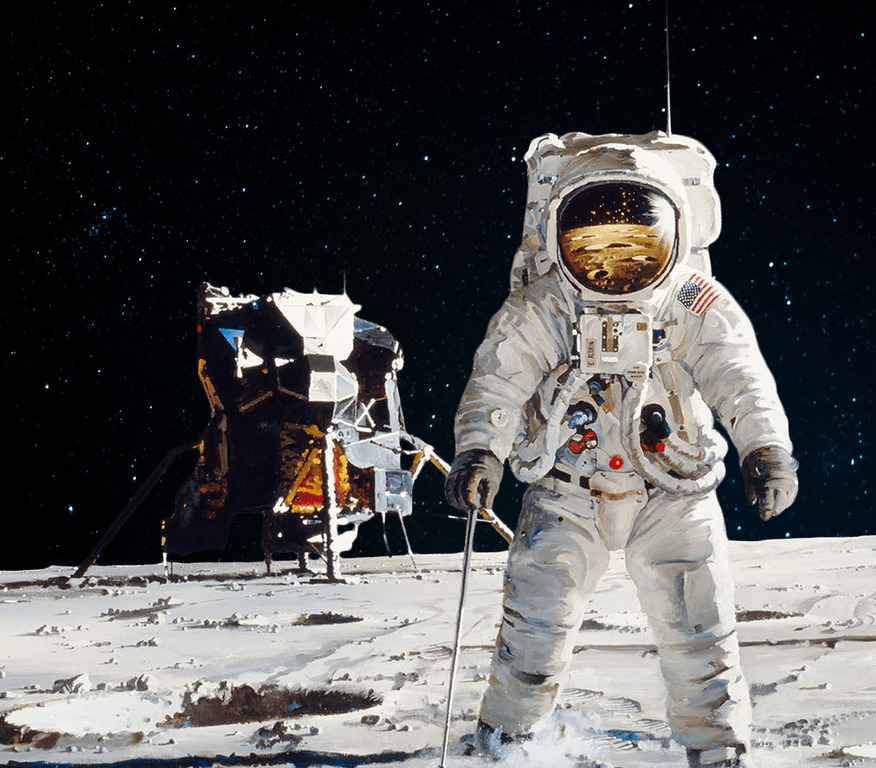
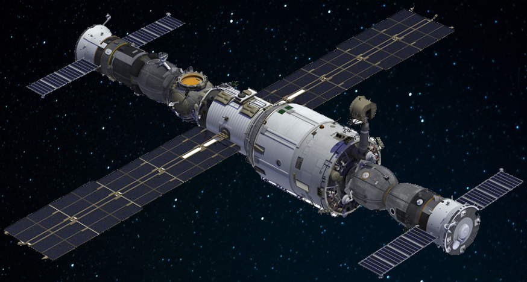
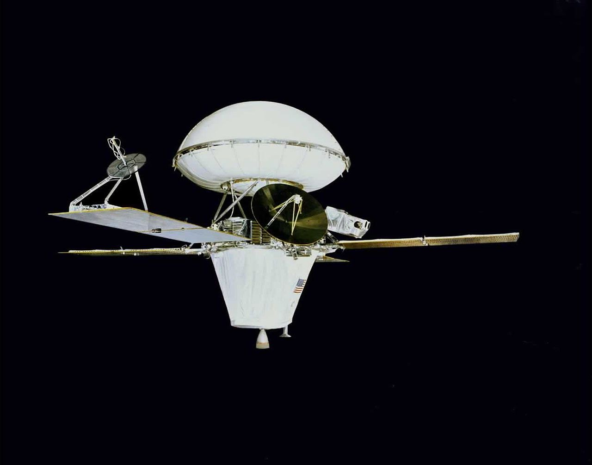

Первые
- 18 марта 1965 года был совершён космонавтом первый выход в открытый космос
- 16-24 июля 1969 года жители Земли впервые в истории совершили посадку на поверхность Луны
- 19 апреля 1971 года запуск первой в мире пилотируемой орбитальной станции
- 20 августа 1975 года запуск первого космического аппарата, который успешно сел на поверхность Марса
Настоящее
Космические агентства занимающиеся исследованием космоса
Будущее
Ближайшее будущее космонавтики
В ближайшие десять лет можно ожидать существенных достижений в мировой науке в следующих областях: искусственный интеллект и машинное обучение, обработка больших данных, физика и математика происхождения Вселенной.
Достижения в сфере искусственного интеллекта могут сделать лишними многие профессии, например водителя и переводчика иностранных языков.
Достижения в области больших данных могут сделать лишними многих офисных работников. А достижения в фундаментальной физике помогут избавиться от многих мифов.
Коммерсант "Что будет дальше в космосе"
Интересные ссылки
Космические ссылки:
- Российская Астрономическая Сеть. Сайт на котором публикается масса интересной информации по астрономии и новостей из космических отраслей.
- Марс Посмотрите на марсианские пустоши которые заснял марсоход "Персеверанс" в 2020-2021 годах.
- Миссии на Марс насколько далека от Земли Красная планета и сколько времени займет путешествие к ней.
- Kerbal Space Program. Компьютерная игра в которой Вам предоставляется возможность руководить собственной космической программой.
Космические цифры:
- Более 15 миллиардов лет - возраст вселенной
- От 200 до 400 млрд - звезд в галактике "Млечный путь"(внутри этой галактики находится Солнечная система)
- Около 5 миллиардов лет - возраст Солнца
- 4,543 миллиардов лет - возраст Земли
- 384 400 километров - расстояние от Земли до Луны
- 225 миллионов километров - среднее расстояние между Землей и Марсом